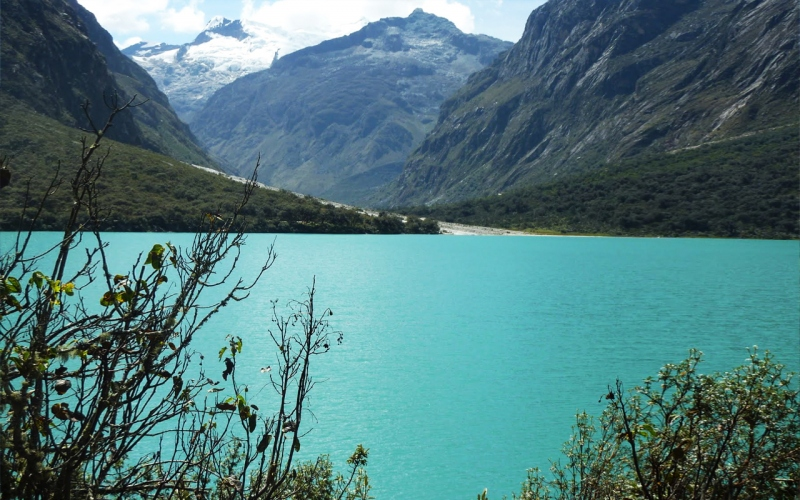

La laguna de LlanganucoLa visita se inicia en el puesto de control (entrada al Parque Nacional Huascarán), donde registrarás tus datos y harás el pago respectivo por derecho de ingreso. El recorrido continúa entre enormes paredones y diversas especies de la flora altoandina. Observarás densos bosques de queñual, alisos, cascadas de aguas puras y cristalinas, convirtiéndole en un verdadero paraiso terrenal, privilegiado por la naturaleza. La primera visita se realiza a la laguna conocida como Chinancocha o "Laguna Hembra", con 1,450m de longitud, 7,393m de ancho y 28m de profundidad, y está rodeada por árboles de queñual, totora y podra apreciar a los patos silvestres nadando cerca de usted. Esta laguna es la más popular y la más visitada por los turistas. Los residentes del lugar ofrecen servicios de paseos en bote y a caballo, además la venta de algunos platos típicos de la zona que deleitarán su paladar. |